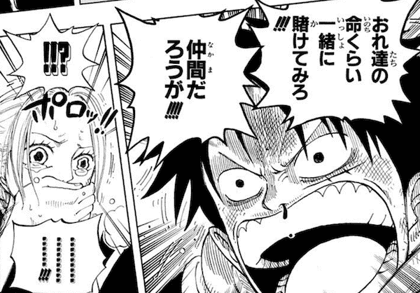
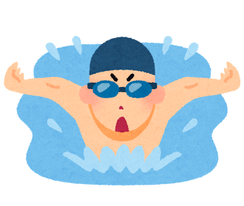

My Prolile

・こんにちわ！初めまして私の名前は黒田 翔仁です。2001年3月27日生まれ。今年20歳です。
簡単に自己紹介をしようと思います。私は、人によく「なやみが少なそう」といわれるくらいポジティブなところがあります。
趣味や学生生活の際、なにをしてきたのかなどを紹介していきます。
・こんにちわ！初めまして私の名前は黒田 翔仁です。2001年3月27日生まれ。今年20歳です。
簡単に自己紹介をしようと思います。私は、人によく「なやみが少なそう」といわれるくらいポジティブなところがあります。
趣味や学生生活の際、なにをしてきたのかなどを紹介していきます。
・自分の趣味を紹介します。自分の趣味は漫画などをみることです
自分の一番好きな漫画はワンピースとナルトです。ワンピースやナルトは漫画やアニメが苦手な人からするとわからないかもしれませんが
自分はナルトを見て、何があっても譲らない信念を持つ大切さ、あきらめない大切さなどが学べました。
ワンピースを見て、仲間の大切さ、何事も全力で楽しむことなどを学びました。
自分の主観ですが、漫画やアニメを見ることが時間の無駄だと思うことがあるかもしれませんが
漫画やアニメからはたくさんのことを学ぶことができます。よかったら見てほしいです。
最近の漫画では、東京卍リベンジャーズがおすすめです。
・自分の特技は、走ることと、泳ぐことです。
少し前に本気で痩せたくなり走っているうちに走れる距離が5km、10km、と伸び20kmまで何気なく走れるようになりました。
それから長距離を走ることがとても楽しくなり、特技と言えるようになりました。
水泳に関しては 、6年間やっている中で早く泳げるようになり毎年夏を楽しみにしています。


・高校学生時代、自分はギター部に所属しており、文化祭で弾き語りなどをしました。
人の前で何かを披露するのは初めてでとても緊張しましたが、人前で歌ったりするのが楽しいという気持ちが少しわかりました。
・専門学生時代ではライブのPAと言って音響機器を使って音の様々な調整を行う役割を行っていました。
そのなかでアーティストさんを呼んで実際にお客さんを入れてライブなどを行っていました。とてもハードで大変ですがとてもとてもやりがいがありました。
普段テレビでもライブでも誰かを引き立たせる催しを行う時など、裏の人たちがすごく頑張っているからこその面白さやすごさがあるんだなと思いました。
その道には進まなかったけど、裏の人を経験して裏の人の大事さを改めて感じました。